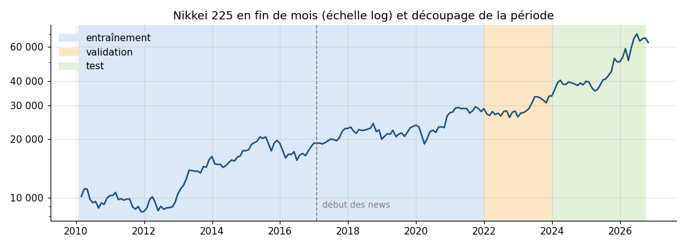
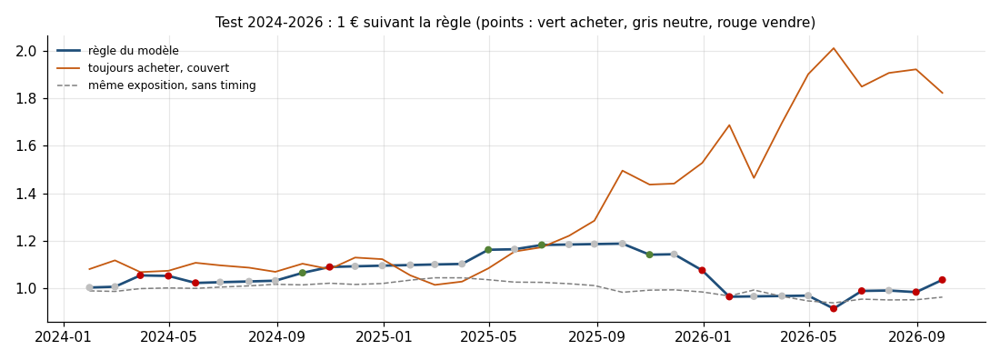
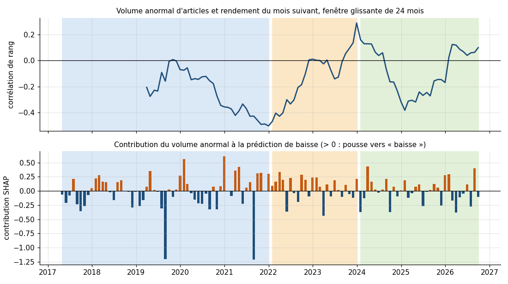

序Albert School · MSc 1 · Applied ML & Maths for ML · novembre 2026
Comprendre le projet Nikkei et juger ses choix
Ce document explique le projet de bout en bout, sans supposer que vous connaissez le machine learning.
Il présente ensuite chacune des décisions prises, avec ses raisons, l'autre possibilité qui existait et un avis
critique, pour que vous puissiez vous faire votre propre opinion.
La réponse du projetAcheter et garder, en se couvrant contre le yenLe modèle n'a pas fait mieux qu'une prévision toute simple.
Le modèle, sur le test0,708 contre 0,657Erreur du modèle (log-loss), face à celle du modèle constant. La plus basse est la meilleure.
En euros, 2024-2026+82,3 % contre +3,5 %Acheter et garder, face à la règle tirée du modèle.
1
Le projet en une page
Nous avons voulu savoir si l'on peut deviner, à la fin d'un mois, ce que fera la Bourse japonaise le mois
suivant, en s'appuyant sur l'actualité et sur les chiffres des marchés. L'idée était d'en tirer un conseil simple
pour un épargnant européen : acheter, attendre ou vendre, et se protéger ou non contre les variations du yen.
La réponse est non. Notre modèle ne fait pas mieux qu'une prévision qui répéterait toujours la même chose, et le
meilleur conseil reste d'acheter et de garder.
Le projet est une classification binaire mensuelle. La cible vaut 1 quand le Nikkei 225 baisse le mois
suivant. Le modèle retenu est une régression logistique régularisée (L2), calibrée par Platt, dont la probabilité
est convertie en action par deux seuils issus d'un calcul d'espérance de gain en euros. Sur le test (33 mois, de
janvier 2024 à septembre 2026), sa log-loss vaut 0,708 contre 0,657 pour le modèle constant.
201mois dans le jeu de données, de février 2010 à octobre 2026
13 694titres de presse sur le Japon, notés par FinBERT, depuis 2017
11 / 12baisses évitées par la règle sur le test, au prix de 18 hausses manquées sur 21
+82,3 %pour « toujours acheter, couvert » sur le test, contre +3,5 % pour la règle
Pourquoi un résultat négatif reste un bon projet
Un projet de machine learning se juge d'abord sur sa méthode. Il est très facile d'obtenir un modèle qui semble
excellent en le laissant, sans le vouloir, apercevoir l'avenir. Ici, trois précautions rendent le résultat crédible :
les données sont datées au jour où elles ont réellement été publiées, les choix ont été écrits et enregistrés avant
de regarder les derniers mois, et ces derniers mois n'ont été utilisés qu'une seule fois. Le projet explique enfin
pourquoi le modèle échoue, ce qui a autant de valeur qu'un bon score.
Comment lire la suite
Toutes les parties suivent le même ordre. Un paragraphe « En clair » donne l'idée avec des mots de tous les
jours. Un paragraphe « Plus techniquement » la reformule avec le vocabulaire du cours et les chiffres exacts.
La partie 3, la plus longue, passe en revue les dix-huit choix du projet. Les fiches se terminent toutes par un avis,
résumé par une étiquette :
Solide le choix résiste bien à la critique
Défendable il se justifie, mais on pouvait faire autrement
Fragile c'est un point faible à assumer
Ces avis sont une appréciation argumentée, rédigée pour vous aider à juger. Ils peuvent se discuter, et
c'est précisément leur rôle.
2
Le parcours, en sept étapes
Le projet avance comme une enquête. On rassemble des indices, on vérifie qu'aucun ne vient du futur,
on entraîne plusieurs modèles sur le passé, on fixe une règle de décision, on la met sous clé, puis on la confronte
une seule fois aux mois les plus récents. On termine en cherchant à comprendre le résultat.
1RassemblerCours, taux, change et titres de presse, tirés de douze sources
2DaterLes séries sont retardées à leur date de publication, puis auditées
3Découper143 mois pour apprendre, 24 pour régler, 33 pour juger
4EntraînerTrois modèles, réglés par 200 essais automatiques
5DéciderUne probabilité calibrée, puis deux seuils pour agir
6Figer, puis testerTout est enregistré avant l'unique évaluation finale
7ExpliquerPourquoi le modèle échoue après 2021
Ces étapes correspondent aux notebooks 01 à 05 et aux séances du cours : cadrage et fuites (S1),
régression logistique et régularisation (S2, S3), arbres et boosting (S4, S5), déséquilibre et seuils (S7),
calibration (S8), explicabilité (S9). Le code principal est en fichiers .py dans src/,
couvert par vingt tests automatiques.
Ce que le modèle regarde
Le modèle ne reçoit que dix informations par mois, choisies pour rester lisibles.
Famille
Variables
Presse
Volume anormal d'articles, sentiment des titres, présence ou non de news
Bourse
Tendance du Nikkei sur 3 et 12 mois, agitation récente (volatilité)
Économie
Variation du taux japonais à 10 ans, enquête Tankan
Change
Portage de la couverture, agitation de l'euro-yen
Régime
Distance à un marché « calme » et à un marché « agité » (k-means)
Ce que le modèle doit prévoir
Deux questions sont posées tous les mois : le Nikkei va-t-il baisser, et vaut-il mieux se protéger contre le yen ?
Cible
Définition
Baisse du Nikkei
y = 1 si le rendement du mois suivant, en yens, est négatif ou nul
Couverture
y = 1 si ne pas se couvrir aurait été préférable le mois suivant
Gain couvert
RN + C + RN·E, où C est le portage
Gain non couvert
RN + E + RN·E, où E est la variation du yen

Le Nikkei 225 en fin de mois et les trois périodes du découpage. Le modèle apprend sur la première, les réglages se font sur la deuxième, et la troisième sert d'examen final.
3
Les dix-huit choix, un par un
Un projet de ce type est une suite de décisions. Aucune n'est obligatoire, et chacune peut se
discuter. Les fiches qui suivent les présentent dans l'ordre où elles ont été prises.
A · Poser le problème
1
Prévoir le sens du mois suivant, et s'intéresser d'abord aux baisses
Défendable
En clairNous ne cherchons pas à deviner de combien la Bourse va bouger. Nous demandons seulement si elle va monter ou baisser le mois prochain, en surveillant surtout les baisses, parce que ce sont elles qui coûtent cher.
TechniquementClassification binaire à horizon d'un mois. La classe positive est la baisse (39 % des mois d'entraînement), ce qui donne un sens direct à la précision, au rappel et à la PR-AUC.
Autre possibilité et avisOn pouvait prévoir le rendement lui-même (régression) ou travailler à la semaine. Le choix mensuel colle à la décision d'un épargnant, mais il ne laisse que 200 exemples, ce qui est très peu.
2
Raisonner en euros, avec ou sans protection contre le yen
Solide
En clairUn Européen qui achète des actions japonaises gagne ou perd aussi selon l'évolution du yen. Nous avons donc mesuré les gains en euros et distingué deux façons d'acheter, avec ou sans protection contre le change.
TechniquementLes rendements couvert et non couvert sont calculés à partir du rendement en yens, de la variation du change et du portage, lui-même tiré de l'écart de taux entre l'euro et le yen. L'identité est vérifiée à 7 × 10⁻⁷ près.
Autre possibilité et avisOn pouvait s'arrêter au rendement en yens. Raisonner en euros donne un vrai sens économique aux erreurs du modèle et rend possible une règle de décision chiffrée.
B · Construire les données
3
Construire le jeu de données nous-mêmes, à partir de douze sources
Solide
En clairAucun fichier tout prêt n'existait. Nous avons téléchargé les cours, les taux et les titres de presse auprès de sources publiques, puis nous avons tout réuni dans un tableau d'une ligne par mois.
TechniquementYahoo Finance, FRED, ministère des Finances du Japon, Bundesbank, BCE, Banque du Japon, e-Stat, Kenneth French, GDELT. Les fichiers bruts sont conservés pour que tout puisse être rejoué sans connexion.
Autre possibilité et avisUn jeu de données public aurait fait gagner du temps. Le construire a demandé du nettoyage (un prix divisé par dix, une fausse séance), mais l'enseignante a validé ce choix et il montre un vrai travail de préparation.
4
Dater les informations au jour où elles ont été publiées, et le vérifier par du code
Solide
En clairL'inflation de mars n'est connue que fin avril. Si on la donne au modèle dès mars, il triche sans le savoir. Nous avons donc retardé toutes les séries jusqu'à leur vraie date de publication.
TechniquementDécalages par série (inflation au 25 du mois suivant, Tankan cinq jours après le trimestre, facteurs Fama-French à t − 2). Un audit codé contrôle la cible, les dates et l'absence de recopie, et un test injecte une fuite pour s'assurer qu'elle est détectée.
Autre possibilité et avisBeaucoup de projets se contentent d'affirmer qu'il n'y a pas de fuite. Ici, la vérification est écrite et rejouable. C'est l'un des points les plus sûrs du projet.
5
Miser sur la presse, alors qu'elle ne couvre qu'une partie de la période
Fragile
En clairL'idée de départ était que l'actualité annonce les mouvements de la Bourse. Or nos articles ne commencent qu'en 2017, et le ton des titres ne prédit finalement presque rien.
Techniquement13 694 titres GDELT notés par FinBERT. Les news ne couvrent que 57 des 143 mois d'entraînement, et un indicateur signale leur absence. Le sentiment a une corrélation de rang de +0,03 avec le rendement suivant.
Autre possibilité et avisOn pouvait se limiter à 2017-2026, ou renoncer aux news. Garder toute la période avec un indicateur est un compromis honnête, mais l'hypothèse centrale du projet repose sur peu de données.
6
Se limiter à dix variables, plus un repère de « régime » de marché
Défendable
En clairAvec si peu de mois, donner cent informations au modèle l'aurait poussé à voir des liens qui n'existent pas. Nous en avons gardé dix, faciles à expliquer, et ajouté un repère qui dit si le marché est calme ou agité.
TechniquementDix variables réparties en quatre familles, et les distances aux deux centres d'un k-means (k = 2) appris sur la volatilité, le rendement du mois et le VIX, à l'intérieur de la pipeline.
Autre possibilité et avisUne sélection automatique était possible. Le choix à la main est lisible, mais il s'appuie sur une exploration de 2017-2026, qui recouvre la validation et le test. C'est une limite déclarée.
C · Entraîner et choisir un modèle
7
Découper le temps en trois périodes qui se suivent
Solide
En clairOn ne mélange jamais les mois. Le modèle apprend sur les années anciennes et il est jugé sur les plus récentes, exactement comme dans la vraie vie, où l'on ne connaît pas l'avenir.
TechniquementEntraînement de 2010 à 2021 (143 mois), validation sur 2022-2023 (24 mois), test de janvier 2024 à septembre 2026 (33 mois). Les réglages utilisent une validation croisée temporelle à quatre plis de douze mois.
Autre possibilité et avisUn tirage au hasard aurait donné de meilleurs scores, mais faux. Le découpage chronologique est le seul honnête. Sa faiblesse tient aux petits effectifs : 24 mois de validation, 12 baisses dans le test.
8
Enchaîner tous les traitements dans une seule pipeline
Solide
En clairCombler les valeurs manquantes ou mettre les variables à la même échelle demande des calculs. Nous les faisons uniquement sur les mois d'apprentissage, pour qu'aucune information des mois d'examen ne s'y glisse.
TechniquementPipeline scikit-learn : imputation par la médiane, distances k-means, standardisation, puis modèle. Tout est réajusté à l'intérieur de chaque pli de validation croisée.
Autre possibilité et avisStandardiser une fois pour toutes sur l'ensemble des données est une erreur courante. La pipeline l'empêche par construction.
9
Comparer trois modèles, réglés par 200 essais automatiques
Défendable
En clairNous avons mis en concurrence un modèle simple et deux modèles plus puissants, en laissant un outil chercher leurs meilleurs réglages.
TechniquementRégression logistique, Random Forest et LightGBM, 50 essais Optuna par étude (quatre études, graine fixée), tous journalisés. Espaces de recherche volontairement étroits : arbres de profondeur 2 à 4, 4 à 8 feuilles.
Autre possibilité et avisBeaucoup d'essais sur seulement 48 mois de validation croisée finissent par s'ajuster au hasard. C'est ce qui arrive à LightGBM, excellent en validation croisée puis décevant ensuite.
10
Juger la qualité des probabilités, et pas seulement le nombre de bonnes réponses
Solide
En clairAnnoncer « hausse » tous les mois donne raison six fois sur dix sans rien prévoir. Nous avons donc évalué si le modèle sait dire à quel point il est sûr de lui.
TechniquementMesure principale : la log-loss, comparée à celle du modèle constant. Compléments : Brier, ECE (calibration), PR-AUC (classement des baisses), ainsi que précision et rappel de la règle.
Autre possibilité et avisL'exactitude aurait flatté le modèle. La log-loss est exigeante, et c'est elle qui révèle l'échec. Ce choix montre le modèle tel qu'il est.
11
Garder le modèle le plus simple
Solide
En clairUn modèle compliqué doit prouver qu'il apporte vraiment quelque chose. Ce n'était pas le cas, et nous avons retenu le plus simple, qui a l'avantage d'être explicable.
TechniquementRègle de baseline du cours : la logistique est conservée tant qu'un modèle plus complexe ne la bat pas à la fois en PR-AUC et en log-loss calibrée sur la validation. Régularisation L2 retenue, λ = 0,117.
Autre possibilité et avisChoisir LightGBM pour son score de validation croisée (0,584) était tentant. Le test confirme que ce choix aurait été pire (0,751 contre 0,708).
D · Passer de la probabilité à l'action
12
Corriger les probabilités du modèle avant de s'en servir
Défendable
En clairQuand le modèle annonce 60 %, il faut que l'événement se produise à peu près six fois sur dix. Nous avons ajouté une correction pour rapprocher ses annonces de la réalité.
TechniquementCalibration de Platt apprise sur les prédictions hors pli de 2018-2021 (pente a = 0,915). Les diagrammes de fiabilité sont codés à la main.
Autre possibilité et avisUn premier essai, appris sur la validation, donnait des pentes négatives et a été écarté après coup. Les plis utilisés ont aussi servi aux réglages. La correction reste donc imparfaite, et le projet le reconnaît.
13
Décider avec deux seuils, calculés à partir des gains et des pertes
Défendable
En clairOn achète seulement si la chance de hausse est assez forte pour valoir le risque, on vend si elle est assez faible, et on ne fait rien entre les deux.
TechniquementSeuils tirés de l'espérance de gain : acheter si p ≥ 0,580, vendre si p ≤ 0,456. Les gains moyens viennent de l'entraînement (+3,89 % un mois de hausse, −4,18 % un mois de baisse), avec une marge de 0,5 % par mois.
Autre possibilité et avisRégler la marge sur la validation aurait donné une règle plus flatteuse. La fixer à l'avance est plus honnête, même si sa valeur reste arbitraire et suppose des gains moyens stables dans le temps.
14
Se couvrir en permanence contre le yen
Fragile
En clairNous espérions aussi prévoir les mois où il vaut mieux ne pas se protéger. Le modèle n'a rien trouvé, et nous avons choisi de rester toujours protégés.
TechniquementLe modèle de couverture n'a aucun coefficient non nul. Sur le test, la couverture permanente rapporte +82,3 % contre +57,9 % sans couverture.
Autre possibilité et avisLe résultat donne raison à ce choix, mais il n'a pas été fait à l'aveugle : le premier notebook affichait déjà des statistiques de la période de test. C'est la principale réserve sur la procédure.
E · Se juger soi-même
15
Tout figer par écrit avant de regarder les derniers mois
Solide
En clairAvant l'examen final, nous avons enregistré le modèle, la règle et ce que nous ferions en cas d'échec. Il devenait impossible de changer d'avis après avoir vu le résultat.
TechniquementLe fichier de décision est enregistré par le commit 75712cf, antérieur au commit 6efd12c de l'évaluation. Il contient l'engagement de recommander « toujours acheter, couvert » si le modèle perd contre le modèle constant.
Autre possibilité et avisRien n'obligeait à cette discipline. L'historique Git en apporte la preuve, et c'est sans doute l'argument le plus fort à présenter à l'oral.
16
N'utiliser l'examen final qu'une fois, et publier l'échec
Solide
En clairSi l'on repasse un examen jusqu'à le réussir, la note ne veut plus rien dire. Nous avons regardé le test une seule fois, et nous avons présenté le résultat tel qu'il est.
TechniquementUne seule évaluation, tracée dans le fichier de résultats. Le script d'évaluation sait la recalculer pour vérification, sans jamais réécrire le fichier figé.
Autre possibilité et avisAjuster le modèle après coup aurait produit un meilleur chiffre et un projet sans valeur. Assumer l'échec est le bon choix scientifique.
17
Chercher pourquoi le modèle échoue
Solide
En clairNous ne nous sommes pas arrêtés au constat. Nous avons ouvert le modèle pour voir ce qui le pousse à se tromper, mois par mois.
TechniquementAnalyse par sous-groupes (années, régimes), importance par permutation, valeurs SHAP globales et locales, courbes de dépendance partielle.
Autre possibilité et avisCe travail réutilise le test, à titre d'exploration et sans produire de nouveau score. La distinction est faite dans le projet, et il faut savoir l'expliquer.
18
Reprogrammer le modèle à la main pour l'annexe de mathématiques
Solide
En clairPour être sûrs de comprendre ce que fait l'outil, nous avons refait ses calculs nous-mêmes et comparé les résultats.
TechniquementLog-loss dérivée du maximum de vraisemblance, gradient (1/m)·Xᵀ(p − y) vérifié par différences finies (1,3 × 10⁻⁹), pénalité L2 lue comme un a priori gaussien (τ = 0,17), descente de gradient qui retrouve scikit-learn à 4,6 × 10⁻⁶.
Autre possibilité et avisUne annexe purement théorique était possible. La vérification numérique relie les formules au modèle réellement utilisé, ce qui la rend plus convaincante.
4
Les résultats
Pendant les réglages, les trois modèles semblaient faire un peu mieux qu'une prévision toute simple.
Cet avantage a disparu dès qu'on les a essayés sur des mois plus récents, d'abord en 2022-2023, puis lors de
l'examen final. La règle tirée du modèle évite presque toutes les baisses, mais elle le doit au fait qu'elle reste
presque toujours à l'écart du marché.
Avant le test : les trois modèles
Modèle
Log-loss, validation croisée
Log-loss, 2022-2023
Constant (référence)
0,672
0,681
Logistique, retenue
0,647
0,701
Random Forest
0,629
0,742
LightGBM
0,584
0,710
Le test, de 2024 à 2026
Modèle
Log-loss
Brier
ECE
PR-AUC
Logistique
0,708
0,257
0,183
0,420
Random Forest
0,788
0,286
0,243
0,388
LightGBM
0,751
0,270
0,219
0,416
Constant
0,657
0,232
0,144
0,364
Dans les tableaux, la meilleure valeur de la colonne apparaît en bleu.
Le modèle classe un peu mieux que le hasard (PR-AUC de 0,420 contre 0,364), mais ses probabilités sont
mauvaises : il annonce 52 % de baisses en moyenne alors qu'il en arrive 36 %. La log-loss, qui punit cet excès de
pessimisme, le place derrière le modèle constant.
Ce que la règle a fait pendant les 33 mois
Action
Mois
Suivis d'une hausse
Suivis d'une baisse
Vendre
10
6
4
Rester neutre
19
12
7
Acheter
4
3
1
En prenant « ne pas acheter » comme une alerte de baisse, le rappel vaut 11/12 (92 %) et la précision 11/29 (38 %). La règle sonne l'alarme presque tout le temps.
En euros, pour 1 € placé
Stratégie
Gain cumulé
Pire recul
Toujours acheter, couvert
+82,3 %
−13,2 %
Toujours acheter, non couvert
+57,9 %
−12,8 %
Rester en placement sans risque
+7,6 %
0 %
Règle du modèle
+3,5 %
−23,1 %
La règle rapporte moins que le placement sans risque, avec un recul maximal plus profond que l'achat simple.

Le test, mois par mois : la règle du modèle face aux stratégies de référence (figure du notebook 03b).
5
Pourquoi le modèle échoue
Le modèle a appris dans un monde, puis on lui a demandé de prévoir dans un autre. Jusqu'en 2021, la
banque centrale du Japon maintenait des taux d'intérêt négatifs. À partir de 2022, elle commence à revenir à une
politique normale, et plusieurs habitudes du marché changent. Ce que le modèle avait appris devient alors faux,
un peu comme un GPS qui garderait une vieille carte après des travaux.
Un signal de presse qui se retourne
Jusqu'en 2021, un mois très commenté dans la presse était plutôt suivi d'une baisse. Ensuite, c'est l'inverse.
Corrélation de rang entre volume d'articles et rendement suivant : −0,38 sur l'entraînement, +0,29 sur 2022-2023.
Une valeur jamais vue
Le coût de la protection contre le yen s'inverse et atteint des niveaux inconnus du modèle, qui prolonge alors une tendance au-delà de ce qu'il a observé.
Sur le test, le portage se situe à six écarts-types de sa moyenne d'entraînement, ce qui ajoute +0,25 de log-odds vers « baisse » tous les mois.
Un pari à contre-courant
Le modèle a appris qu'après une forte hausse sur un an, la Bourse se reprend souvent. Or la hausse de 2024-2026 a duré.
Le coefficient du momentum 12 mois est contrarien, ce qui payait pendant les rebonds de 2018-2021.
Sous-groupe du test
Mois
Baisses
Log-loss du modèle
Log-loss du modèle constant
Année 2024
12
6
0,672
0,717
Année 2025
12
3
0,684
0,607
Année 2026
9
3
0,787
0,644
Le modèle ne fait mieux que le modèle constant qu'en 2024, où il repère les six baisses de l'année. Avec
trois à neuf baisses par sous-groupe, ces écarts restent fragiles et doivent être présentés comme des indices.

En haut, la corrélation glissante sur 24 mois entre le volume d'articles et le rendement suivant. En bas, la contribution de cette variable aux prévisions du modèle (figure du notebook 04).
6
Ce qui reste fragile, et ce qu'on pourrait faire autrement
Aucun projet n'est parfait, et celui-ci a l'honnêteté de lister ses faiblesses. Les connaître vous
permettra de répondre sans être pris de court, et de juger ce qui tient vraiment.
Les limites que le projet déclare
Peu de données. 143 mois pour apprendre et 12 baisses dans le test. Un seul mois de plus ou de moins peut changer un écart.
Un test qui n'était pas totalement caché. Le premier notebook affichait des statistiques de la période de test. Le choix du modèle et des seuils n'en dépend pas, mais celui de la couverture permanente n'a pas été fait à l'aveugle.
Des variables choisies après coup. Elles viennent d'une exploration de 2017-2026, qui recouvre la validation et le test.
Une calibration imparfaite. Elle est apprise sur des plis qui ont aussi servi aux réglages, et un premier essai a été écarté après avoir vu son résultat.
Un diagnostic qui réutilise le test. Il sert à comprendre, sans produire de nouveau score.
Des pistes pour aller plus loin
Ces pistes sont des suggestions. Elles ne figurent pas dans le projet rendu.
Réapprendre au fil du temps. Réentraîner le modèle tous les mois sur une fenêtre glissante lui permettrait de suivre un changement de régime.
Borner les variables. Limiter le portage aux valeurs vues à l'entraînement éviterait l'extrapolation.
Allonger l'historique des news, ou tester le projet sans elles pour mesurer ce qu'elles apportent vraiment.
Passer à une fréquence hebdomadaire pour disposer de plus d'exemples.
Détecter le changement de régime pour suspendre le modèle quand le monde ne ressemble plus à ses données.
À retenir pour jugerLes points forts du projet tiennent à sa méthode : absence de
fuite vérifiée par du code, décision figée avant le test, test utilisé une fois, échec expliqué. Ses points faibles
tiennent aux données : trop peu de mois, des news trop récentes, et un marché qui a changé de régime au milieu de
la période.
Vue d'ensemble des dix-huit avis
Avis
Nombre
Choix concernés
Solide
11
Raisonner en euros, construire les données, dater les informations, découper le temps, pipeline unique, juger les probabilités, modèle simple, figer avant le test, tester une fois, expliquer l'échec, annexe de maths
Défendable
5
Cible mensuelle, dix variables, trois modèles et 200 essais, calibration, règle à deux seuils
Fragile
2
Miser sur la presse, se couvrir en permanence sans l'avoir décidé à l'aveugle
7
Dix questions qu'on peut vous poser
Votre modèle ne marche pas. Qu'avez-vous appris ?
Que le signal recherché est faible et instable, et qu'une méthode rigoureuse permet de le démontrer. Nous savons aussi dire pourquoi : le marché a changé de régime en 2022.
Pourquoi ne pas avoir pris LightGBM, meilleur en validation croisée ?
Un modèle complexe doit battre clairement le modèle simple. Sur 2022-2023, ses probabilités étaient moins bonnes, et le test lui donne 0,751 de log-loss contre 0,708 pour la logistique.
Comment savez-vous qu'il n'y a pas de fuite ?
Les séries sont retardées à leur date de publication, et un audit codé le contrôle. Un test injecte même une fuite volontaire pour vérifier qu'elle est détectée.
Le test était-il vraiment caché ?
Pour le choix du modèle et des seuils, oui, et l'ordre des commits le prouve. Le premier notebook montrait en revanche des statistiques de cette période, ce qui a pu influencer le choix de la couverture permanente. Nous le déclarons.
Pourquoi la log-loss plutôt que l'exactitude ?
Annoncer « hausse » tous les mois donne 64 % de bonnes réponses sur le test sans rien prévoir. La log-loss mesure la qualité des probabilités, dont la règle de décision a besoin.
Pourquoi ne pas avoir pondéré les classes ?
Optuna a essayé l'option et ne l'a pas retenue. Elle tire les probabilités vers 50 %, alors que la décision demande des probabilités bien calibrées. Le déséquilibre est traité par les seuils.
D'où viennent les deux seuils ?
D'un calcul d'espérance de gain. On achète quand le gain attendu dépasse le placement sans risque d'au moins 0,5 % par mois, avec les gains et pertes moyens mesurés sur l'entraînement.
La règle évite 11 baisses sur 12. N'est-ce pas un succès ?
Elle y parvient en n'achetant que 4 mois sur 33. Elle manque ainsi 18 hausses sur 21 et finit à +3,5 %, sous le placement sans risque.
Et l'équité ?
Nos données ne concernent aucune personne et ne contiennent aucun attribut sensible. Nous avons transposé l'analyse à des groupes de mois, sans trouver d'écart au-delà du bruit.
Que feriez-vous avec six mois de plus ?
Nous réentraînerions le modèle sur une fenêtre glissante, nous bornerions le portage aux valeurs déjà observées, et nous mesurerions ce qu'apportent vraiment les news en refaisant le projet sans elles.
Petit lexique
Mot
Ce qu'il veut dire
Modèle constant
Un modèle qui annonce tous les mois la même probabilité de baisse (39 %, la fréquence de l'entraînement). Il sert de plancher à battre.
Log-loss
L'erreur des probabilités. Elle est d'autant plus basse que le modèle est bon, et elle punit fortement une prévision sûre d'elle qui se révèle fausse.
PR-AUC
La qualité du classement des mois à risque. Un classement au hasard obtient la fréquence des baisses, soit 0,364 sur le test.
Calibration
L'accord entre les probabilités annoncées et ce qui se produit réellement. L'ECE et le score de Brier la mesurent.
Fuite
Une information du futur qui se glisse dans les données d'apprentissage et fausse les résultats.
Couverture, portage
La protection contre les variations du yen, et ce qu'elle rapporte ou coûte tous les mois selon l'écart de taux entre l'euro et le yen.
Régularisation L2
Une pénalité qui empêche les poids du modèle de devenir trop grands. Elle équivaut à supposer au départ que ces poids sont proches de zéro.
SHAP
Une méthode qui répartit une prévision entre les variables, pour voir lesquelles l'ont poussée vers la hausse ou vers la baisse.